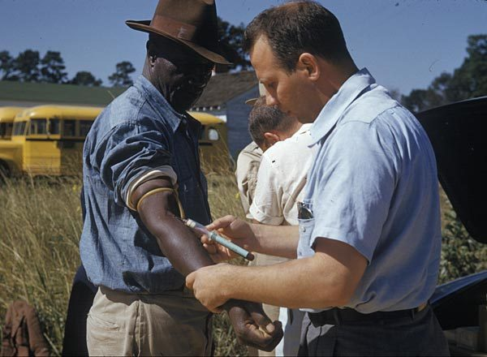

FILE TUSKEGEE/STUDY // 1932–1972
Tuskegee Syphilis Study
The U.S. Public Health Service deceived Black men with syphilis and failed to offer effective treatment. The study observed existing infections; the claim researchers deliberately infected participants is unsupported.


CASE ANALYSIS
What the record supports
CLAIM AND BOUNDARY
The Public Health Service followed Black men with syphilis without adequate informed consent and failed to provide penicillin after it became standard. This was a documented racist research abuse. It was not an infection experiment: participants were already infected; claims officials gave them syphilis are unsupported.
CHRONOLOGY AND CONTEXT
The study began in 1932 in Macon County, Alabama, enrolling 600 Black men: 399 with syphilis and 201 without. Researchers misled participants with promises of care for ‘bad blood.’ Penicillin became available in the 1940s, but observation continued until a 1972 news report ended the project.
DOCUMENTARY EVIDENCE
PHS records, Senate hearings, the 1973 advisory panel report, and CDC histories document design, deception, and failure to treat. The cohort and institutional decisions are in the official record. A presidential apology later acknowledged wrongdoing. The evidence does not show intentional inoculation of participants.
CONTRARY EVIDENCE AND ALTERNATIVES
Officials claimed the study yielded natural-history data, and some participants received examinations or benefits. Neither fact overcomes deception or withheld care. The study’s racial assumptions shaped its design. It should not be conflated with separate Guatemala experiments, where deliberate exposure occurred.
UNCERTAINTY
Individual records and outcomes are complex, and surviving files cannot capture every participant experience. Participants had syphilis before enrollment, a central fact often lost in retellings. Tuskegee contributed to medical mistrust but does not alone explain every present-day disparity or belief.
CALIBRATED ASSESSMENT
Tuskegee was a serious ethical atrocity involving deception and denied treatment, not intentional infection. Correcting that distinction does not minimize misconduct. The case shows how racism and weak oversight harm people without requiring a fictional secret weapon or infection plot.
WHAT WOULD CHANGE THIS
Complete clinic and family records could clarify individual care and outcomes. Intentional infection would require evidence that researchers introduced the disease; existing files instead show pre-existing infection. New epidemiology can refine consequences, not erase established consent failures.
DOCUMENT TRAIL
Sources & limitations
- CDC, Tuskegee study historyPublic-health summary of established chronology; consult original panel records for archival detail.
- Senate hearings on TuskegeePrimary testimony documents oversight and institutional failures.
- National Archives, Tuskegee guideArchival reference distinguishes the study from Guatemala inoculation experiments.